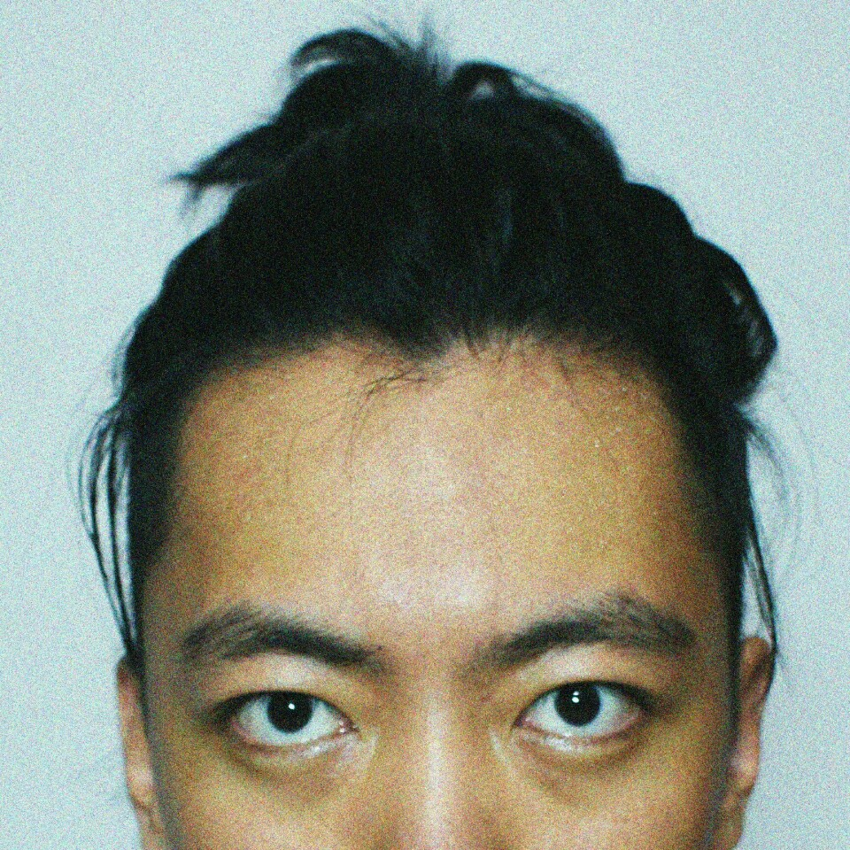

NULL
2016
2016/12/26 by DKZ
总结一下2016年。
- 年初的时候，重构了对白，到四月份的时候下线了这个项目。
- 给土百做了一个小游戏。
- 在家学习了maya和zbrush，制作了一个头，这个模型后来被放在wo.io中。
- 准备了一阵出国的事情，徒劳无功。
- 在一家招聘公司做前端，主要是使用avalon制作页面。写了一个chrome插件，用来代替公司原有的简历抓取。
- 在公司里完善了wtf的功能，加入了terminal一个CUI控制端。
- 完成了wo.io，添加了一些效果，波普，ascii。。。
- 一些小项目CLIoutput，aGAINSTnATURE。
- dkzbin添加了一些小脚本，和一个gulp工具。
- cubex3上线steam，大概有700个人投票，18% vote yes。
- cubex3用到了eletron，将网页打包为桌面应用。
- 写了个录制直播视频的脚本，pccold，用到了livestreamer，ffmpeg，you-get，bypy等工具。购买了一个vps用来跑它和翻墙。
- 接触了一些技术，redis，nginx，docker，mongodb，unity等等。
- 学习webgl，threejs，maya，写了些简单的shader。

- 留了长发。
没做完的，还剩《山海》。大概从7月24号构思这个游戏，陆陆续续一直在做，一直在减。这个游戏真的变成了山和海挡住了前路。
其他的好像没什么特别的，特别想说，特别想做=null，空。